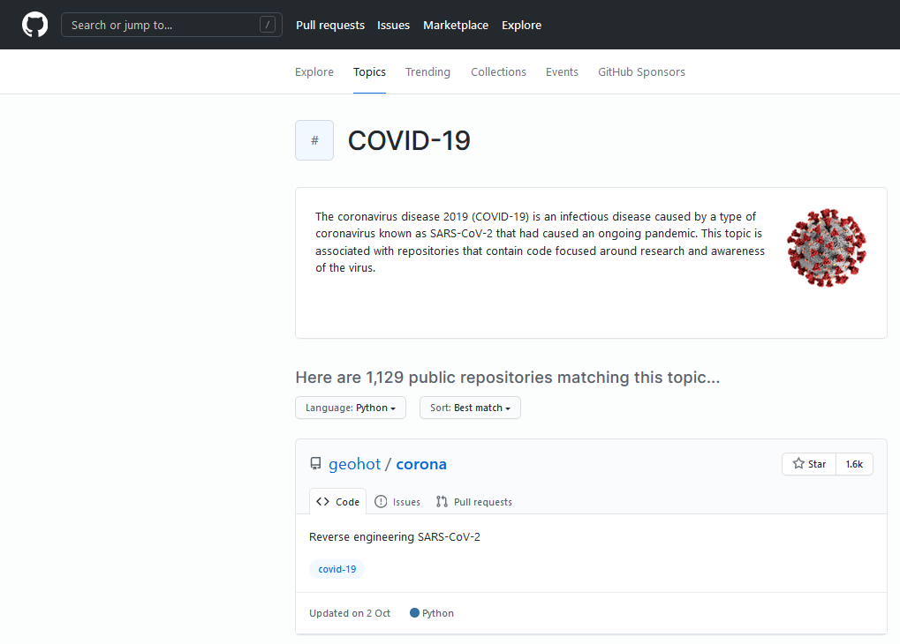
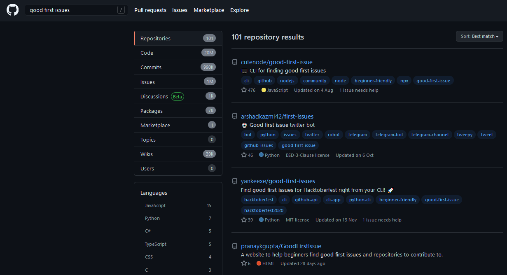

O que é GitHub?

O Github é um serviço na nuvem, gratuito(com planos avançados que são pagos) que te permitem enviar seus repositórioe alterações do Git.
Existem alternativas ao GitHub que é o caso do GitLab e também o BitBucket, ou próprias empresas criam servidores para hospedarem repositórios do Git
Open Source & Explorando Repositórios
Open Source nada mais é que código fonte(source) abertous ou seja, atribuímos níveis de acesso para permitir que outras pessoas possam utilizar esse código. Não só utilizar, mas também colaborar.
O GitHub cresceu muito pois tem vários repositórios de código livre onde as pessoas colaboram e reutilizam o código.
Você pode pesquisar por tópicos e por linguagens:
Link do GitHub: https://github.com/
Good First Issues
Se você se interessar por colaborar em um projeto, procure pela label "Good First Issue". Que significa que o problema é bom para qualquer iniciante no repositório.
